El medio interestelar: líneas, polvo y las fases del gas
Entre las estrellas de una galaxia hay gas y polvo: el medio interestelar (ISM). Esta clase construye la caja de herramientas para estudiarlo: por qué existen las líneas espectrales, cómo el polvo atenúa y enrojece, cuáles son las cinco fases del gas, cómo se ioniza y recombina el hidrógeno, y cómo el efecto Doppler nos revela el movimiento del gas.
Una galaxia no es solo estrellas. Entre ellas vive el medio interestelar: gas (átomos, moléculas, iones) y polvo (granos sólidos), en proporción aproximada de 1 parte de polvo por cada 100 de gas en masa. El problema es que ese material casi nunca se ve a simple vista: hay que leerlo en la radiación. La clase pasada vimos los mecanismos de emisión continua (cuerpo negro, bremsstrahlung, sincrotrón); hoy entra el protagonista que faltaba: las líneas espectrales. Con líneas podemos saber de qué está hecho el gas, en qué estado se encuentra (neutro, ionizado, molecular), a qué temperatura, e incluso cómo se mueve. Para alguien con formación de ingeniería, la idea central es familiar: cada especie química emite y absorbe en "frecuencias de resonancia" discretas, y el espectro es la firma que permite identificar los componentes del sistema y estimar su estado — como un análisis espectral de señales, pero aplicado a una galaxia entera.
Panorama: la galaxia en todas las longitudes de onda
Repaso del mapa maestro: cada banda del espectro revela un componente distinto del ISM.
La clase abre retomando el "mapa maestro" de la Vía Láctea observada en distintas bandas. La lectura es la siguiente: la emisión continua (que cubre un rango amplio de longitudes de onda) proviene de cuerpos negros (estrellas), de cuerpo gris (polvo: cuerpo negro con la ley de Planck modificada), de bremsstrahlung (free-free: gas caliente frenando electrones libres) y, en casos especiales como remanentes de supernova, de sincrotrón. Pero dos filas del mapa dicen otra cosa: "hidrógeno atómico" y "hidrógeno molecular" son emisión de línea — radiación concentrada en un rango angostísimo de longitud de onda. Explicar esas líneas es el objetivo de la primera mitad de la clase.
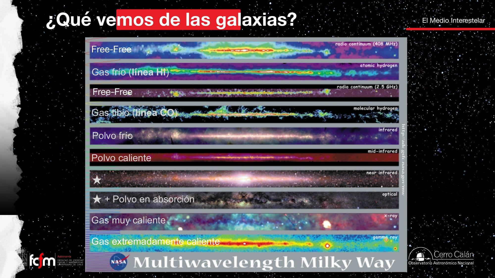
Es un banco de filtros: la galaxia emite una señal de banda anchísima y cada instrumento (radiotelescopio, telescopio IR, óptico, de rayos X) es un filtro pasabanda que aísla un mecanismo físico distinto. El continuo es como el piso de ruido de banda ancha; las líneas son tonos espectrales angostos que delatan resonancias del sistema.
Las burbujas de Fermi
Como ejemplo de continuo extremo, la profesora retoma las burbujas de Fermi: dos lóbulos gigantes de gas, perpendiculares al disco de la Vía Láctea, visibles en rayos gamma. Se cree que son reliquias de actividad pasada del agujero negro supermasivo del centro galáctico, que calentó gas hasta temperaturas altísimas. A las preguntas del curso respondió dos cosas: (a) en otras galaxias es muy difícil detectarlas porque el gas es tan tenue que la radiación es poquísima — es un límite de sensibilidad instrumental, no de física; y (b) salen perpendiculares al disco porque el gradiente de presión es mucho más abrupto en esa dirección: dentro del plano el gas sigue rodeado de alta presión, pero hacia afuera la presión cae rápido, y el gas caliente escapa por ahí, como si se apretara un globo por los costados.
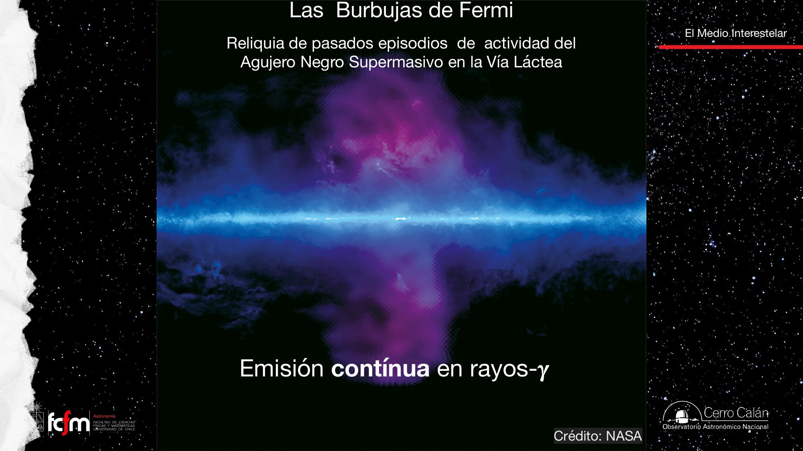
Por qué existen las líneas: el átomo cuantizado
La mecánica cuántica discretiza las órbitas; los saltos entre niveles emiten o absorben fotones de energía exacta.
A diferencia del continuo, una línea espectral aparece en un rango muy pequeño de longitudes de onda. Para explicarla hace falta mecánica cuántica: a escala microscópica hay cantidades discretizadas. Un electrón alrededor de un núcleo no puede tener cualquier energía ni cualquier radio: solo existen ciertos orbitales permitidos. La profesora lo ilustró con una imagen macroscópica: es como si a uno le dijeran que solo puede pararse en este punto o en aquel otro, y en ningún lugar intermedio — absurdo en nuestra escala, real en la escala atómica. Bohr fue el primero en plantear esta discretización para el átomo de hidrógeno (un protón + un electrón), de manera puramente empírica; cuando después se desarrolló la teoría completa de la mecánica cuántica, los mismos resultados salieron desde primeros principios.
Las reglas del juego:
- El electrón salta entre orbitales absorbiendo o emitiendo un fotón cuya energía es exactamente la diferencia de energía entre los dos niveles. No sirve cualquier fotón.
- Si el electrón no está en la capa más interna (, el estado base), el átomo está excitado. Los estados excitados tienen una vida media: el átomo tiende a desexcitarse espontáneamente, reemitiendo el fotón.
- Si se entrega energía suficiente para arrancar el electrón por completo (no saltar a otro orbital, sino quedar libre), el átomo se ioniza.
Las series del hidrógeno: Lyman, Balmer, Paschen
Los saltos se agrupan en series según el orbital de llegada (o de partida): la serie de Lyman conecta con , la de Balmer con , la de Paschen con (luego Brackett, Pfund…). Dentro de una serie, las líneas se nombran con letras griegas: el primer salto es α, el siguiente β, luego γ… Los datos claves de la clase:
- Lyman requiere los fotones más energéticos (sacar al electrón del nivel base cuesta más): se observa en el ultravioleta.
- Balmer cae en el óptico — por eso fue la primera serie identificada históricamente: nuestros primeros instrumentos trabajaban en luz visible.
- Paschen ya se corre al infrarrojo.
- Dentro de cada serie, las diferencias de energía se van achicando (del 2 al 6 vs. del 2 al 7 casi no cambia), así que las líneas se van agolpando hacia un límite.
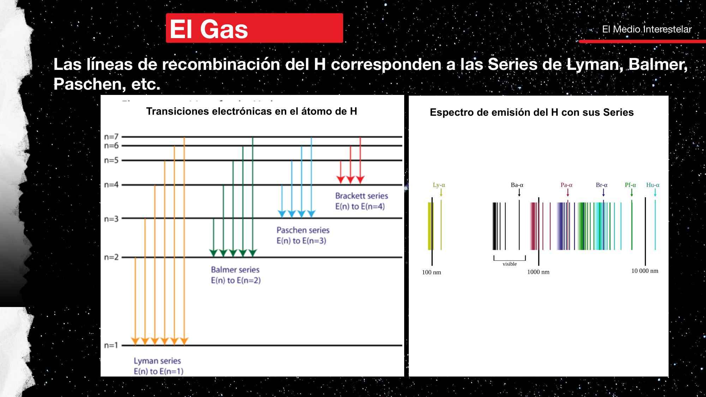
Una estudiante notó que en el diagrama la flecha "del 5 al 2" se ve tan larga como "del 2 al 1". La profesora aclaró: el diagrama engaña; cada nivel tiene energías distintas y las diferencias solo son comparables dentro de una misma serie. Para comparar entre series hay que hacerlo cuantitativamente. Y la analogía que le enseñaron alguna vez: es más difícil quitarle a la gallina los pollitos cercanos que los que andan lejos — cuesta más energía remover al electrón de los orbitales internos.
Las moléculas complican (y enriquecen) el cuadro: además de los niveles electrónicos, los núcleos ligados pueden rotar y vibrar, y esos estados también están cuantizados. Una molécula que cambia de estado rotacional también absorbe o emite fotones de energías específicas — típicamente mucho menores, en el radio/milimétrico. Esto será clave para el gas molecular (sección 12).
Excitación y desexcitación: cómo el gas se enfría
Colisiones que excitan + fotones que escapan = un radiador que disipa la energía interna del gas.
Un fotón no es la única manera de excitar un átomo. Si una partícula rápida (otro átomo, un electrón libre) choca con él, la energía cinética del choque puede transferir el electrón a un orbital superior: es la excitación colisional. Luego el átomo se desexcita radiativamente, emitiendo un fotón que se lleva esa energía. Miren la contabilidad energética: energía que era cinética interna del gas (es decir, temperatura — la temperatura mide cuán rápido se mueven las partículas) termina convertida en fotones que escapan. El resultado neto: la nube radió su temperatura, se enfrió.
Excitación colisional + desexcitación radiativa = el mecanismo de enfriamiento del gas interestelar. Si la temperatura es suficientemente alta, los choques son suficientemente energéticos para excitar átomos y moléculas; cada fotón emitido es un paquetito de energía interna que abandona la nube. En ingeniería térmica sería un radiador: convierte energía interna del sistema en radiación hacia el ambiente.
«¿Es como el efecto fotoeléctrico?» — Sí, es la misma física de cuantización: en el experimento clásico, mientras la radiación no tiene la energía correcta no pasa nada, y al alcanzar la energía suficiente se empiezan a liberar electrones. La diferencia de contexto: aquí hablamos de excitar niveles ligados (o ionizar átomos de gas), allá de liberar electrones de un metal.
Absorción vs. emisión: leyendo espectros
La misma nube de gas produce líneas oscuras o brillantes según dónde esté el observador.
Armemos el experimento conceptual de la clase. Una estrella como el Sol emite un continuo (cuerpo negro de ~6.000 K) en todas las direcciones (isotrópicamente). En el camino hacia nosotros, la radiación atraviesa una nube de gas — supongamos que de hidrógeno puro. ¿Qué ve cada observador?
- Observador con la estrella detrás de la nube: ve el continuo de la estrella con líneas de absorción superpuestas: faltan justamente los fotones con las energías de Lyman α, β, γ…, Balmer α, β…, porque el gas los absorbió para excitar sus electrones. Cada fotón absorbido "desaparece" de esa dirección y deja una marca oscura.
- Observador que mira la nube sin la estrella detrás: no hay continuo de fondo; solo ve los fotones que la nube reemite al desexcitarse. Como esa reemisión es isotrópica (en todas direcciones), este observador ve exactamente las mismas líneas, pero en emisión.
Detalle fino de la clase: las líneas de absorción no son totalmente negras, porque parte de la reemisión isotrópica también sale hacia el observador original. Pero como lo absorbido se reparte en todas las direcciones, en la línea de visión de la estrella igual queda un déficit neto: la absorción se ve.
De qué están hechas las estrellas
Este esquema explica los espectros estelares: una estrella es esencialmente un cuerpo negro, pero sus últimas capas — la fotósfera — actúan como esa nube de gas envolvente que absorbe. Sobre el continuo aparecen líneas de absorción de los elementos presentes en la atmósfera estelar: las identificamos (estas son de hidrógeno, esas de carbono, aquellas de nitrógeno…) y así determinamos la composición química de las estrellas sin visitarlas jamás. En los espectros reales que mostró la clase (estrellas de 3.500 a 50.000 K, incluyendo el Sol y Vega), además se aprecia el continuo: la estrella de 50.000 K se ve débil en el óptico porque le pillamos el cuerpo negro "recién empezando a subir" (su peak está en el UV), el Sol se ve completo de lado a lado, y las más frías siguen subiendo hacia el infrarrojo.
El espectro estelar es continuo (portadora) + muescas de absorción (notch filters): cada elemento de la fotósfera es un filtro rechaza-banda extremadamente selectivo, con frecuencias centrales tabuladas por la física atómica. Identificar composición es fingerprinting espectral: correlacionar las muescas observadas contra la biblioteca de líneas conocidas de cada elemento.
Espectros de galaxias: estrellas + gas
El espectro de una galaxia es la suma de todas sus estrellas… más las líneas de emisión de su medio interestelar.
Cuando tomamos el espectro de una galaxia no vemos una estrella: vemos la combinación de todas las estrellas de la región observada. La profesora mostró espectros de su propia tesis doctoral:
- Centro de Andrómeda (M31): espectro rojo, con muy poca emisión azul — el cuerpo negro "promedio" de una población estelar más bien vieja e intermedia (recordar de la clase 1: el bulbo tiene poblaciones viejas). Y una cantidad enorme de líneas de absorción: no son malos datos, cada subida y bajada es absorción real en las fotósferas de las estrellas.
- Galaxias con formación estelar (como la irregular NGC 3738): el continuo es más plano/azul (estrellas más jóvenes y calientes) y, además de las absorciones estelares, aparecen líneas de emisión delgadas e intensas. Esas líneas no vienen de las estrellas: vienen del medio interestelar, de gas excitado e ionizado. Su presencia va de la mano con la formación estelar (lo veremos en la sección 9).
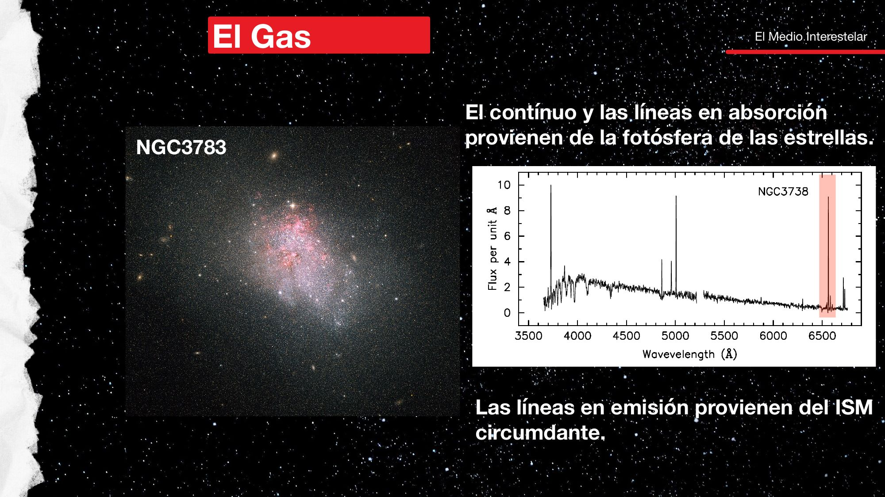
«¿Por qué la segunda galaxia tiene menos flujo que la primera?» — Puede ser simplemente que esté más lejos: el eje vertical es flujo medido, no luminosidad intrínseca. «¿Y eso que sobresale hacia abajo en Andrómeda?» — Todo eso es absorción; si fuera un cuerpo negro perfecto (la suma de todos los cuerpos negros de esas estrellas) sería una curva suavecita.
La línea de 21 cm del hidrógeno neutro
Una transición minúscula de energía, pero el trazador más poderoso del gas en el universo.
Hay otra cuantización del hidrógeno, mucho más sutil que los orbitales: la orientación relativa del spin del protón y del electrón. En el mundo cuántico solo hay dos opciones — paralelos o antiparalelos (nada de ejes inclinados como el de la Tierra). Spins paralelos es un estado levemente excitado; antiparalelos es el verdadero estado base. Cuando el átomo pasa de paralelo a antiparalelo emite un fotón de energía mínima, con longitud de onda de 21 centímetros — literalmente el largo de una regla de estuche escolar. Es radio: se observa con radiotelescopios.
¿Por qué esta línea es tan importante? Porque el hidrógeno está en todas partes y porque la transición es tan barata energéticamente que cualquier choque mínimo con una partícula vecina vuelve a excitar el estado: excitación colisional de bajísima energía, desexcitación radiativa, y de nuevo. El gas neutro "transmite" en 21 cm de forma permanente, y con eso se puede mapear la fase gaseosa de las galaxias y su entorno.
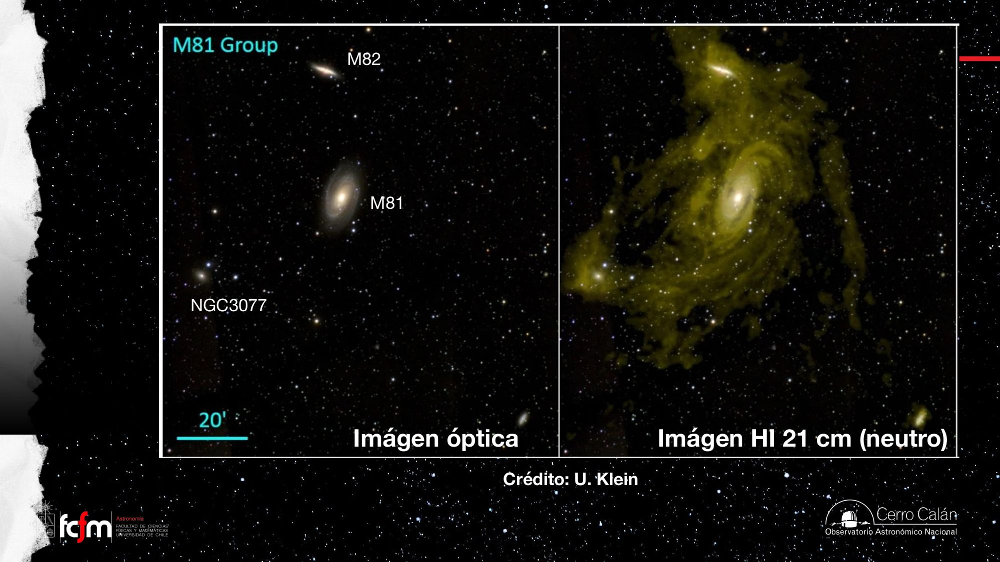
La emisión de 21 cm que mapeamos es del gas donde la excitación es colisional (choques de energía ínfima bastan) y la desexcitación es radiativa — el mismo esquema de la sección 3, en su versión de mínima energía. En la tabla de fases (sección 8), esta línea traza sobre todo el medio neutro frío (CNM).
El polvo: qué es, dónde nace, cómo atenúa y enrojece
Granos sólidos de carbono y silicio que absorben el UV y el óptico, y reemiten en el infrarrojo.
El polvo son partículas sólidas macroscópicas — ya no átomos o moléculas individuales, sino aglomeraciones de ellos. Examinando su luz es muy difícil precisar la composición exacta (a diferencia del gas, cuyas líneas delatan cada especie), pero todo apunta a dos familias: granos donde el compuesto principal es carbono y granos de silicio (silicatos), más hidrógeno, oxígeno y otros. No es casualidad: carbono y silicio son excelentes formando cadenas largas — toda la química orgánica se basa en el carbono.
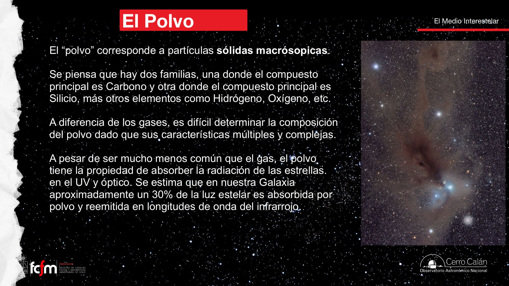
Dónde se forma: astroquímica
El polvo no se forma en el ISM difuso: para que haya reacciones químicas los átomos deben encontrarse, y el medio interestelar es demasiado poco denso. Aquí no manda la gravedad sino la química — hay toda una rama, la astroquímica, dedicada a cómo las partículas del medio interestelar reaccionan y se transforman. Se necesitan regiones densas y de temperatura no muy alta (si hace demasiado calor, los choques violentos destruyen las moléculas). ¿Dónde se da eso? En los vientos estelares: material (partículas, no radiación) eyectado desde la superficie de las estrellas — en particular de estrellas tipo AGB, las gigantes frías de la esquina superior derecha del diagrama HR, con superficies de 2.000–3.000 K. También en novas y remanentes de supernovas. Suena paradójico fabricar polvo "cerca de estrellas", pero es donde coinciden densidad suficiente y temperatura tolerable.
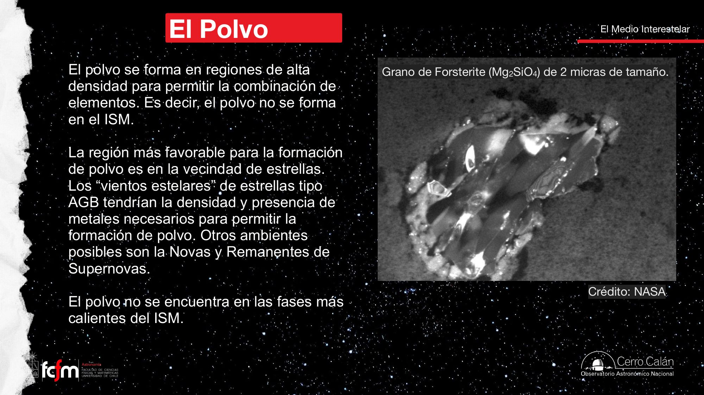
Atenúa y enrojece
El efecto del polvo sobre la luz tiene nombre técnico: atenúa (llega menos radiación al otro lado) y enrojece (la luz que logra pasar es preferentemente la de longitudes de onda más largas). La demostración cualitativa es la nube Barnard 68; la cuantitativa, las curvas de extinción.
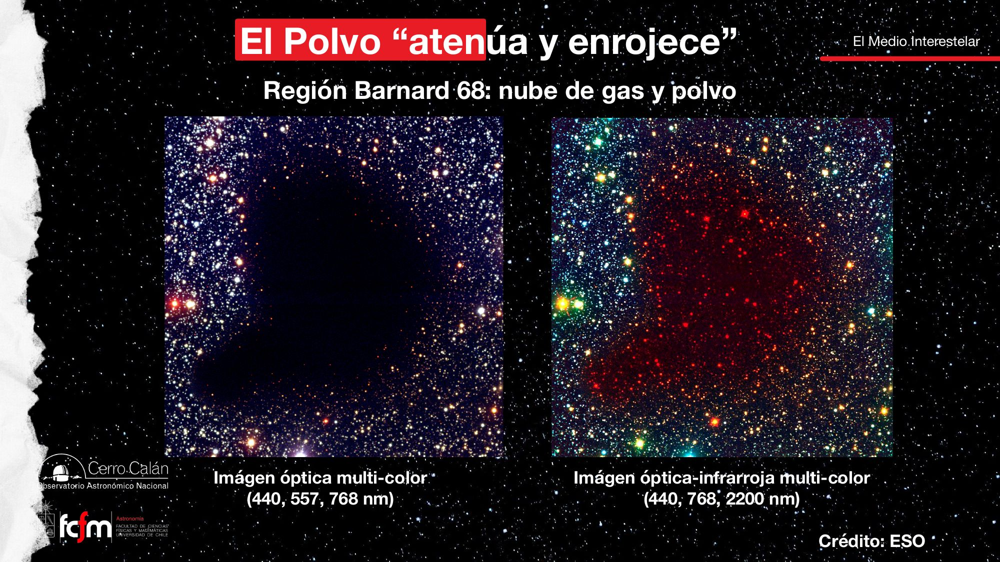
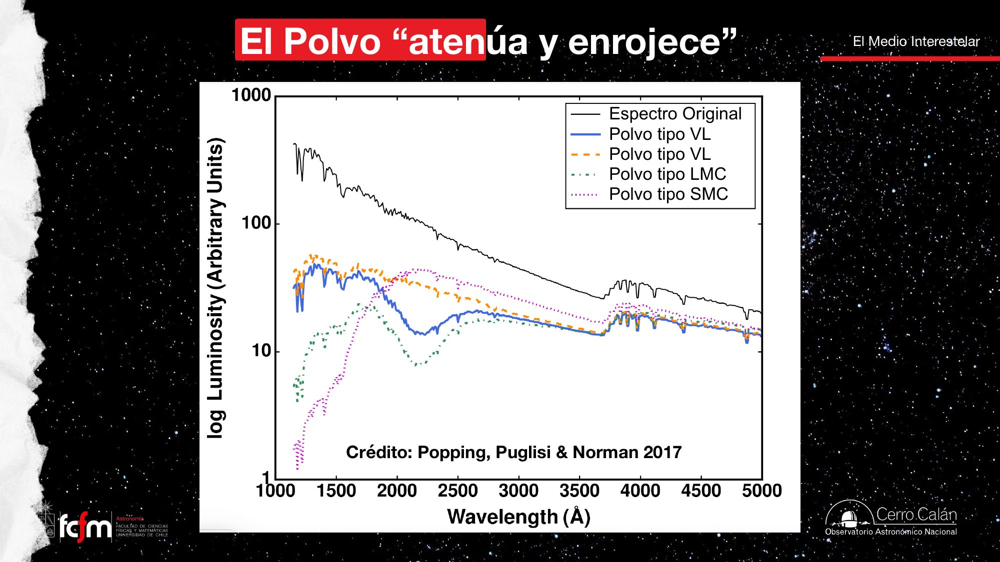
La curva de extinción es la respuesta en frecuencia de un canal con pérdidas: atenuación fuerte y dependiente del material en alta frecuencia (UV), casi transparente en baja frecuencia (IR). "Enrojecer" = el canal es un filtro pasa-bajos; distintos polvos = distintas funciones de transferencia. Y el dato de 100 → 1 cuentas es −20 dB de atenuación en la banda UV.
Las cinco fases del gas
De 10 K a 500.000 K: el ISM es un sistema multifase con densidades que varían órdenes de magnitud.
El gas del ISM existe en una variedad gigantesca de temperaturas y densidades, y se lo clasifica en fases según el estado en que se encuentra el hidrógeno (molecular H₂, atómico neutro H, o ionizado H⁺):
| Fase | Estado del H | n [cm⁻³] | T [K] | Masa [10⁹ M☉] | f (volumen) |
|---|---|---|---|---|---|
| Molecular | H₂ | > 300 | ~10 | 2,0 | 0,01 |
| Neutro frío (CNM) | H | 50 | ~80 | 3,0 | 0,04 |
| Neutro tibio (WNM) | H | 0,5 | ~8×10³ | 4,0 | 0,30 |
| Ionizado tibio (WIM) | H⁺ | 0,3 | ~8×10³ | 1,0 | 0,15 |
| Ionizado caliente (HIM) | H⁺ | 3×10⁻³ | ~5×10⁵ | — | 0,50 |
Valores para la Vía Láctea según la diapositiva (crédito: A. Parikka 2015). La profesora comentó que el valor de T del WNM le parece "demasiado elevado" — tomarlo como orden de magnitud.
Lecturas clave de la tabla, tal como las hizo la clase:
- Las masas son comparables entre fases (dos, tres, cuatro, uno ×10⁹ M☉)… pero las fracciones de volumen f son radicalmente distintas: el gas molecular, siendo el más denso, ocupa apenas el 1% del volumen; el HIM, tenuísimo, llena la mitad de la galaxia.
- La fase molecular es la más fría (pocos K sobre el cero absoluto) y la más densa. Es tan fría que las moléculas se mueven tan lento que los choques no las rompen: la molécula sobrevive. Es la única fase donde ocurre formación estelar: son las nubes con menor presión interna, susceptibles al colapso gravitacional.
- El CNM (~80–200 K) es el que mapeamos con la línea de 21 cm.
- Las dos fases ionizadas se distinguen por el mecanismo: el WIM está ionizado por radiación de estrellas calientes; el HIM por colisiones debidas a su propia temperatura altísima (sección 9).
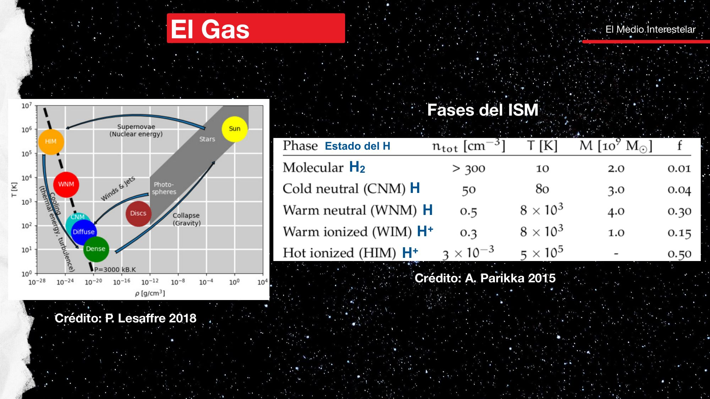
Un estudiante notó que todo lo que llaman "tibio" (8.000 K) es más caliente que la superficie del Sol (6.000 K). Respuesta: en astronomía caliente y frío son términos relativos, jerga de cada subárea — la gente de rayos X llama "frío" a cosas que siguen emitiendo en rayos X. Lo que importa es el orden: esto es más frío que esto otro. No hay escala absoluta en el uso cotidiano de estos términos.
Ionización, recombinación y regiones H II
Dos formas de arrancar el electrón, una sola forma de volver: recombinación con cascada de líneas.
Dos maneras de ionizar
Ionizar el hidrógeno significa arrancarle el electrón. Hay dos escenarios:
- Ionización colisional: un choque suficientemente energético entre partículas. Requiere gas tremendamente caliente. Es el mecanismo del HIM (Hot Ionized Medium).
- Ionización radiativa: el gas no es particularmente caliente, pero está expuesto a radiación ultravioleta muy energética que extrae el electrón. Es el mecanismo del WIM (Warm Ionized Medium), y se debe a la presencia de estrellas calientes en la vecindad.
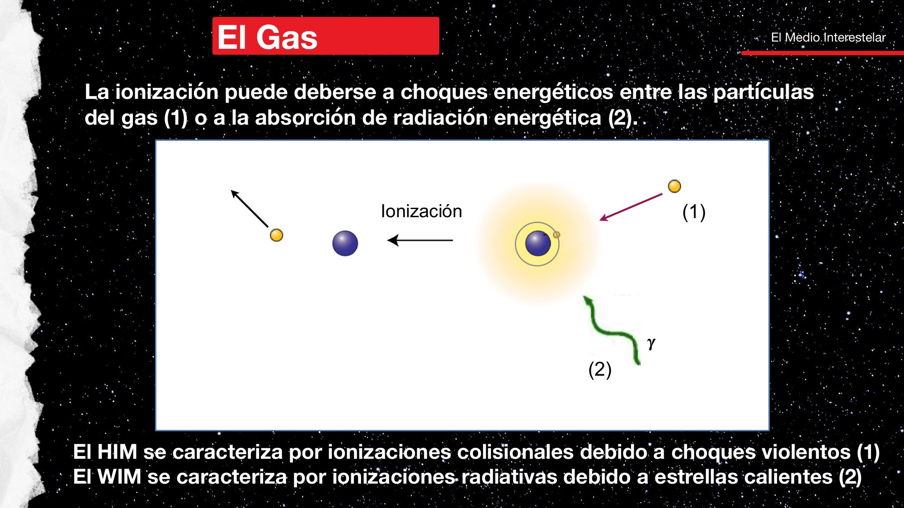
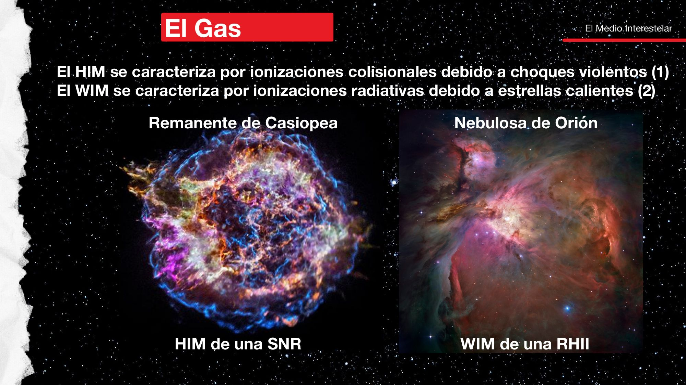
La recombinación y sus líneas
En esa sopa de protones y electrones libres, dos cargas opuestas eventualmente se encuentran, se atraen y se "abrazan": recombinación — se vuelve a formar un átomo neutro. El punto clave: el electrón típicamente no cae directo al estado base, sino a un estado excitado, y luego baja en cascada de orbital en orbital emitiendo fotones — es decir, líneas de emisión (las series de Lyman, Balmer, Paschen…). Y esto ocurre sin importar cuál fue el mecanismo de ionización. Una condición sí es necesaria: densidad suficiente. Si el gas es demasiado tenue, la probabilidad de encuentro protón-electrón se desploma y el gas simplemente permanece ionizado.
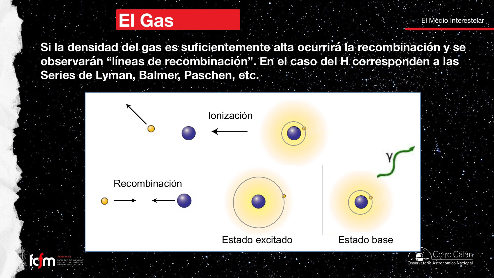
Regiones H II: el ciclo sin fin alrededor de estrellas jóvenes
Ahora todo se conecta. En una galaxia con formación estelar se puebla la secuencia principal completa: nacen estrellas de 3.000, 5.000, 10.000 K… y unas pocas de 30.000–50.000 K. Solo estas últimas — la punta caliente — emiten cantidades copiosas de fotones UV capaces de ionizar el hidrógeno. Alrededor de las regiones de formación estelar queda además mucho gas denso (la materia prima sobrante), así que el ciclo se cierra: fotón UV ioniza → protón y electrón se reencuentran → recombinación → cascada de líneas (Hα incluida) → el átomo neutro recibe otro fotón UV → … Un círculo que no para hasta que las estrellas ionizantes mueren; entonces el gas queda neutro. Por eso estas regiones son transientes.
Paréntesis de pizarra de la clase. En química, hidrógeno neutro = H (o H⁰) e ionizado = H⁺. En astronomía se usan números romanos: H I = neutro (ningún electrón perdido), H II = ionizado una vez (que para el H es lo máximo: queda el puro protón). Para elementos con más electrones se sigue subiendo: O III es oxígeno dos veces ionizado. De ahí el nombre región H II: burbuja de hidrógeno ionizado alrededor de estrellas jóvenes y calientes. La Nebulosa de Orión es el ejemplo clásico: la región más densa y compacta donde se formaron las estrellas está en un rincón; la radiación que escapa "cava" y mantiene ionizada una región mucho más extensa.
Consecuencia observacional de primer orden: cuando el espectro de una galaxia muestra líneas de emisión prominentes, en la mayoría de los casos hay formación estelar reciente — estrellas muy calientes ionizando su entorno, con la recombinación regalándonos Hα y compañía. Las preguntas del curso precisaron el cuadro: la nube molecular original es compacta; parte del gas se consume formando estrellas, el gas denso irradiado se convierte en PDR (regiones de fotodisociación, más complejas), y la región H II es el resto del gas más tenue de los alrededores, ionizado "porque le tocó la suerte" de tener estrellas O cerca.
La región H II funciona en régimen estacionario: tasa de fotoionización ≈ tasa de recombinación, como un tanque con caudal de entrada y salida balanceados. La línea Hα es el "indicador de caudal": su intensidad mide cuántas recombinaciones por segundo ocurren y, por lo tanto, cuántos fotones ionizantes están produciendo las estrellas — un sensor indirecto de la tasa de formación estelar.
M82: supernovas y gas que escapa de la galaxia
Cuando muchas burbujas de supernova se solapan, el gas caliente encuentra la salida: perpendicular al disco.
¿Qué pasa cuando el medio interestelar caliente se acumula? El caso extremo es M82, una galaxia pequeña del grupo de M81 que está siendo "vapuleada" gravitacionalmente por su vecina mayor. La perturbación disparó un episodio de formación estelar intensísimo en su centro (una región pequeña): allí explotan supernovas todo el tiempo, sus burbujas de gas a millones de grados se solapan, y se forman enormes regiones de alta presión y temperatura. Igual que en las burbujas de Fermi, al gas caliente "le gusta" escapar perpendicular al plano, por el eje menor, donde el gradiente de presión es más abrupto. No importa cuál fue el mecanismo que calentó el gas (agujero negro en las burbujas de Fermi, formación estelar violenta en M82): gas suficientemente caliente escapa por ahí.
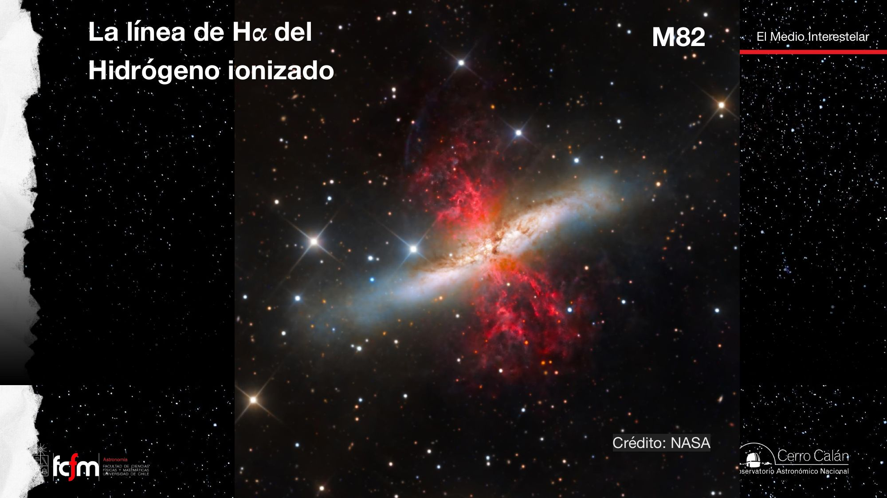
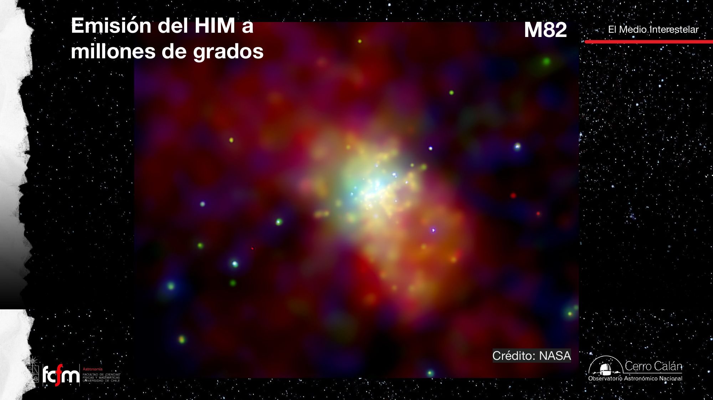
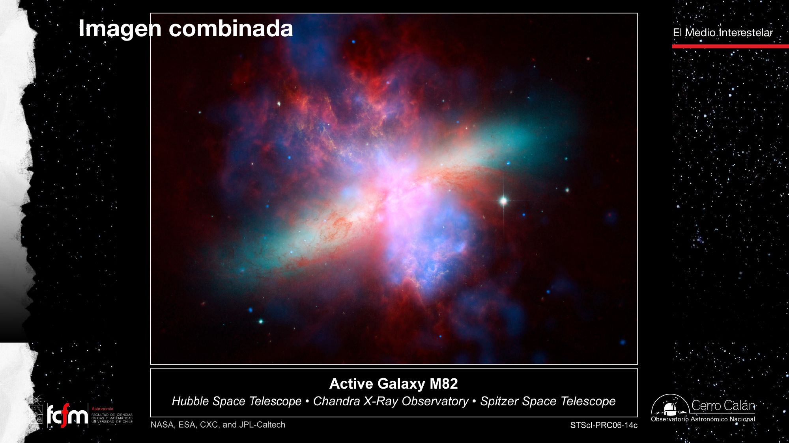
El efecto Doppler: cómo se mueve el gas
Las líneas no solo dicen qué hay: dicen a qué velocidad se mueve. Corrimiento = dinámica; ancho = temperatura.
Tener líneas en un espectro (en emisión o en absorción) regala una segunda dimensión de información: el movimiento. El efecto Doppler es puramente ondulatorio — el clásico cambio de timbre de un motor que pasa: más agudo acercándose, más grave alejándose — y la luz, siendo onda, no es excepción. Lo que importa es la velocidad relativa entre emisor y receptor:
- Acercamiento → la radiación se corre al azul (longitudes de onda más cortas).
- Alejamiento → se corre al rojo (más largas).
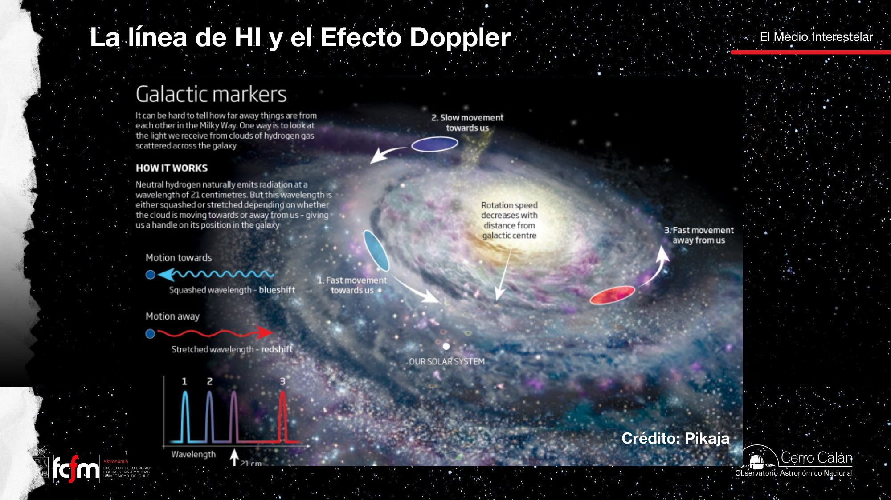
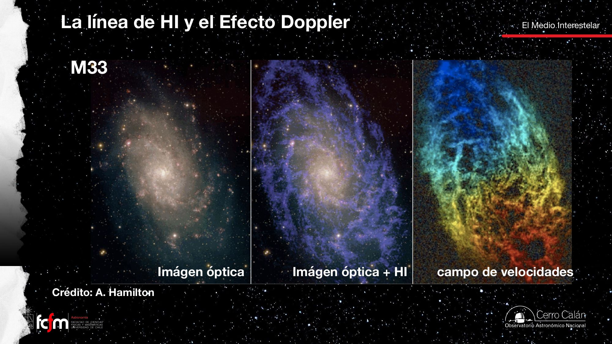
Tres aclaraciones importantes que dejó la ronda de preguntas: (1) La rotación del material en una galaxia no sobrepasa 200–300 km/s, así que los corrimientos Doppler dinámicos son pequeños. (2) El redshift cosmológico es otra cosa: no es movimiento real sino la expansión del universo, y sus corrimientos son "salvajes" — cuando el corrimiento es enorme, se sabe que es cosmológico; cuando es pequeño y ambas cosas se superponen, hay que modelar para separarlas. (3) La temperatura no corre la línea: la ensancha. Corrimiento = dinámica; ancho = agitación térmica. (Se anunció que la próxima clase parte por ahí.)
El gas molecular, el CO y el ciclo ISM–CGM
La fase más fría casi no emite: se traza con monóxido de carbono. Y el gas no se queda quieto: circula entre la galaxia y su halo.
H₂ no emite: se usa CO como trazador
Queda una pregunta práctica: ¿cómo se mapea la fase más fría, la molecular, donde ocurre la formación estelar? Mala noticia: el hidrógeno molecular (H₂) casi no emite — es una molécula demasiado estable, le cuesta muchísimo radiar. La solución es usar un trazador: la molécula de monóxido de carbono (CO), la siguiente más común, que sí emite con ganas. Cuando alguien muestra un mapa de "gas molecular", casi siempre es un mapa de CO usado como proxy del H₂.
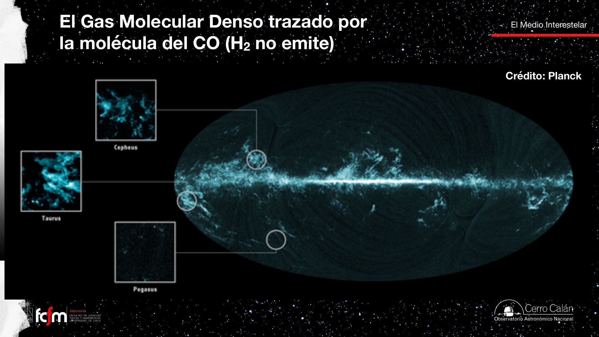
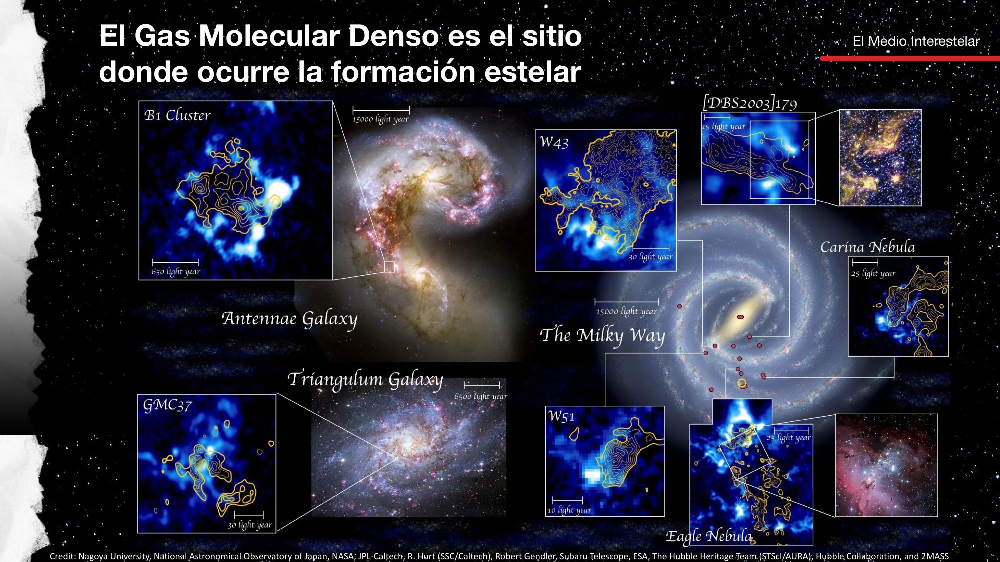
El ciclo ISM–CGM
Cierre conceptual de la clase: el medio interestelar no es un sistema aislado. Alrededor de cada galaxia hay una región más extendida — una especie de "atmósfera" — llamada medio circungaláctico (CGM). Los vientos y jets (como los de M82) inyectan allí gas caliente, rico en elementos pesados recién sintetizados (viene de regiones de formación estelar y supernovas). Parte de ese gas se enfría y se cree que vuelve a caer al ISM. El ciclo completo: nubes moleculares → formación estelar → supernovas y pérdida de masa → vientos/jets hacia el halo → enfriamiento → reingreso. Cuánto material se pierde definitivamente y cuánto es retenido es un área de investigación muy activa hoy — es la clave de cómo las galaxias van sintetizando y reteniendo sus elementos pesados.
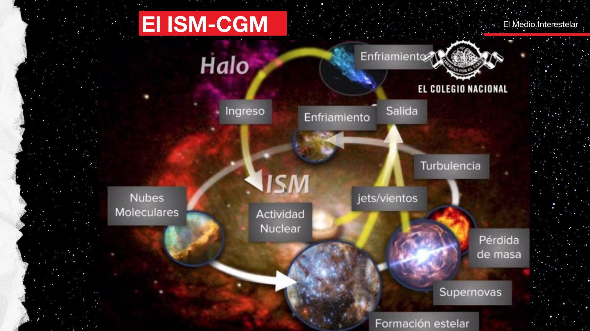
El ciclo ISM–CGM es un balance de masas con recirculación: un proceso (formación estelar) consume materia prima (gas molecular), genera subproductos calientes y enriquecidos (vientos de supernova), parte se pierde por la chimenea (escape al CGM/intergaláctico) y parte se condensa y realimenta el reactor. Modelar galaxias es, en buena medida, cerrar ese balance de masas y energía.
Para reforzar esta clase con un texto introductorio en inglés: OpenStax Astronomy 2e, capítulo 20 — "Between the Stars: Gas and Dust in Space" (nivel introductorio). Cubre el medio interestelar, el gas, el polvo (extinción y enrojecimiento) y el ciclo del material cósmico, con figuras muy afines a las de esta clase. No reemplaza el material del diplomado; es un complemento de lectura.
Conceptos clave
Tabla de repaso rápido.
| Concepto | Qué es / valor | Por qué importa |
|---|---|---|
| ISM | Gas + polvo entre las estrellas (≈ 100:1 en masa) | La materia prima y el registro de la vida de una galaxia |
| Línea espectral | Radiación en un rango angostísimo de λ | Delata composición, estado y movimiento del gas |
| Cuantización | Orbitales con energías discretas (Bohr → mecánica cuántica) | Explica por qué existen las líneas |
| Series de Lyman / Balmer / Paschen | Saltos hacia n=1 (UV) / n=2 (óptico) / n=3 (IR) | Las "frecuencias de resonancia" del hidrógeno |
| Excitación colisional | Choque transfiere energía cinética al electrón | Con desexcitación radiativa: el gas se enfría |
| Absorción vs. emisión | Nube frente a continuo vs. nube sola | La geometría decide el tipo de línea observada |
| Fotósfera | Últimas capas de la estrella, donde se forman sus absorciones | Así sabemos de qué están hechas las estrellas |
| Línea de 21 cm (H I) | Transición de spins paralelos → antiparalelos (~5,9 μeV) | Mapea el gas neutro; se observa con radiotelescopios |
| Polvo | Granos sólidos de C o Si; ~30% de la luz estelar absorbida | Atenúa y enrojece; reemite en el IR |
| Astroquímica / vientos AGB | El polvo nace en regiones densas y no muy calientes | El polvo no se forma en el ISM difuso |
| Curva de extinción | VL vs. LMC vs. SMC: iguales en óptico/IR, brutales en UV | No todo el polvo es igual; el UV es el más castigado |
| Fases del ISM | Molecular · CNM · WNM · WIM · HIM | Masas comparables, volúmenes radicalmente distintos |
| Fase molecular | ~10 K, n > 300 cm⁻³, f ≈ 1% | La única fase donde se forman estrellas |
| HIM | ~5×10⁵ K, colisionalmente ionizado, f ≈ 50% | Burbujas de supernova solapadas; emite en rayos X |
| WIM / regiones H II | ~8.000 K, ionizado por radiación UV de estrellas O | Marcador de formación estelar reciente (Hα) |
| Recombinación | p + e → H excitado → cascada de líneas | Origen de las líneas de emisión; requiere densidad suficiente |
| H I / H II | Notación astronómica: neutro / ionizado | Números romanos = estado de ionización |
| Efecto Doppler | Δλ/λ = v/c; rotación galáctica ≤ 200–300 km/s | Corrimiento = dinámica; el ancho de línea = temperatura |
| CO como trazador | H₂ casi no emite; el CO sí | Único acceso práctico al gas molecular |
| CGM | Medio circungaláctico: la "atmósfera" de la galaxia | Ciclo de eyección, enfriamiento y reingreso del gas |
Exámenes de práctica
10 exámenes de 5 preguntas (3 de alternativas autocorregibles + 2 de respuesta escrita).
- Examen 01Continuo, líneas y mecanismos
- Examen 02El átomo de H y sus series
- Examen 03Excitación y enfriamiento
- Examen 04Absorción, emisión y espectros
- Examen 05La línea de 21 cm
- Examen 06El polvo interestelar
- Examen 07Las fases del gas
- Examen 08Ionización y regiones H II
- Examen 09Doppler y dinámica del gas
- Examen 10Integrador